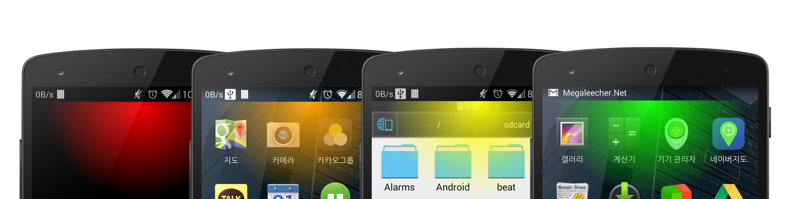

어떤 화면에 있든
어떤 화면에 있든, 상태바가 숨겨져 있어도
그라데이션 형태의 오버레이로, 알림을 확인하실 수 있습니다.

GlowNotifier는 시스템 알림을 놓치는 일을 줄여 드립니다.
어떤 화면에 있든, 상태바가 숨겨져 있어도
그라데이션 형태의 오버레이로, 알림을 확인하실 수 있습니다.
그라데이션의 위치와 색상 등을 원하시는 것으로 설정해 보세요
GlowNotifier Applicaiton for Android / Maintained by Youngbin Han / License : GNU GPLv3